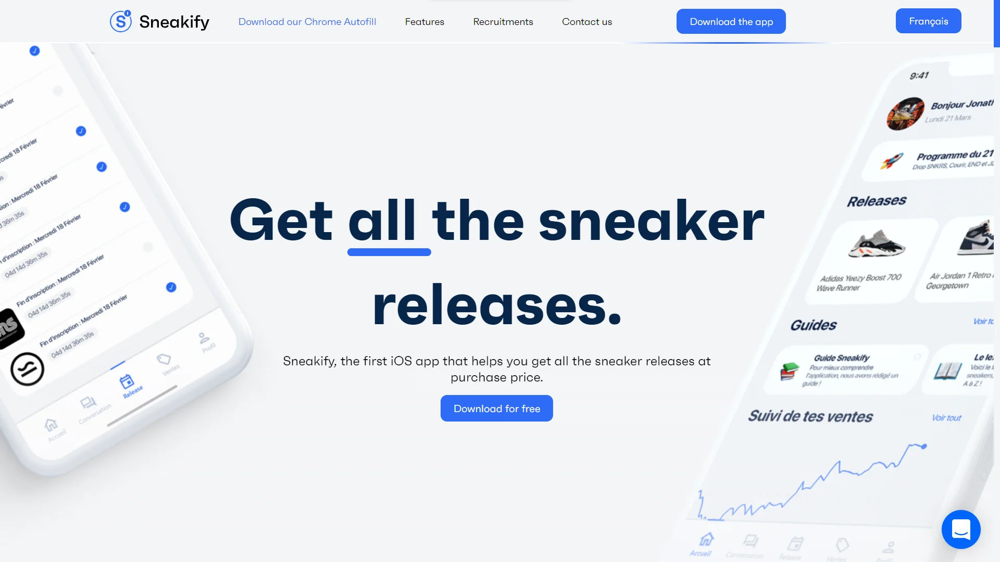

Context
Mon travail
Récap
Sneakify est une application mobile qui met en relation des particuliers souhaitant acheter ou échanger des paires de sneakers. L'application facilite ces échanges en créant un espace de mise en relation dédié. Pour valoriser l'application, un site vitrine a été développé. Ce site présente les fonctionnalités et le concept de Sneakify. Dans le cadre de ce projet, nous avons été chargés de migrer l'ancien site, initialement conçu en HTML et CSS "purs", vers Angular. Cette migration permet d'améliorer la gestion, les performances et la facilité de maintenance du site.
Dans ce projet, j’ai assuré l’ensemble de la migration du site, de A à Z. J’ai adapté les différentes pages et composants pour les intégrer dans l’environnement Angular. J’en ai également profité pour apporter plusieurs améliorations. Notamment, j’ai optimisé les images en les convertissant au format .webp, un format plus léger et mieux adapté au web. Un autre point important : le site n’était pas responsive, ce qui empêchait une navigation correcte sur mobile. J’ai donc mis en place un design responsive durant la migration, afin de garantir une expérience fluide sur tous les types d’écrans. Enfin, une demande spécifique consistait à ajouter un formulaire d’inscription à une newsletter. J’ai conçu cette nouvelle interface et connecté le formulaire à une base de données pour collecter et stocker les adresses e-mail des utilisateurs.
À travers ce projet, j’ai renforcé plusieurs compétences clés. Tout d’abord, j’ai approfondi ma maîtrise d’Angular, en migrant un site complet et en adaptant ses pages et composants à ce framework. Ce travail m’a permis de mieux comprendre la structuration d’un projet Angular et d’optimiser la gestion de ses différentes parties. J’ai également amélioré mes compétences en optimisation web, notamment en travaillant sur le poids des ressources. Par exemple, j’ai converti les images en .webp pour améliorer les performances et réduire le temps de chargement. De plus, ce projet m’a permis de perfectionner mes connaissances en responsive design, en rendant le site accessible et agréable à utiliser sur tous types d’écrans, notamment mobiles. Enfin, j’ai acquis de l’expérience dans l’intégration d’un formulaire et la connexion à une base de données, en mettant en place un système d’inscription à une newsletter avec enregistrement des e-mails utilisateurs. Ce projet m’a donc permis de développer à la fois mes compétences techniques (Angular, optimisation, responsive, gestion de données) et ma capacité à gérer un projet de développement web de bout en bout.